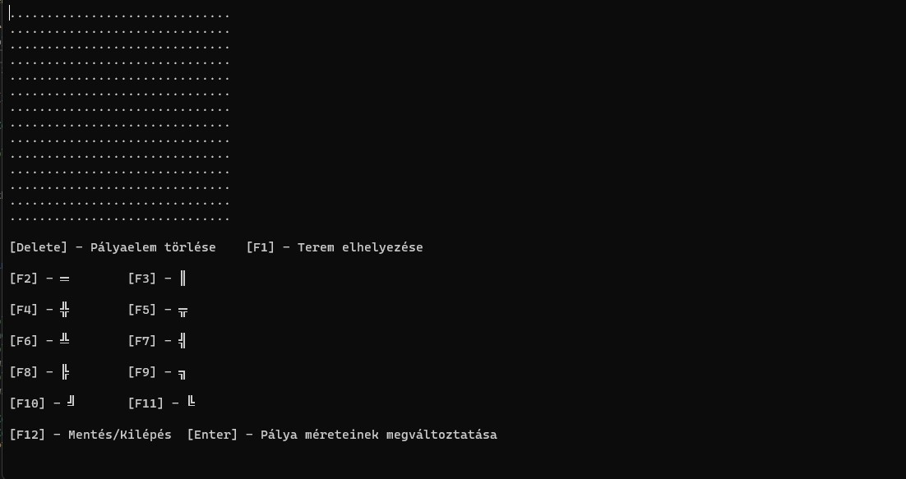

Üdvözöljük a weboldalon
Labirintus használati útmutató
Labirintus használati útmutató
A játék elindítása után a nyelvválasztó menü fogad minket. Nyilak mozgatásával ki lehet választani, hogy milyen nyelven szeretnénk játszani, majd enterrel meg kell erősíteni azt.
Miután kiválasztottuk a nyelvet, a főmenü fogad minket. Itt lehetőségünk van már meglévő térképet generálni, újat létrehozni, másik nyelvet választani, vagy kilépni a játékból. A menüben szintén a nyilak mozgatásával lehet irányítani.
Ha térképet szeretnénk kiválasztani, akkor meg fog jelenni előttünk az összes file, ami térképet tartalmazhat. Nyilak mozgatásával és az enter lenyomásával szeretnénk a számunkra tetsző térképet kiválasztani, valamint lehetőségünk van visszamenni a főmenübe is.
Ha véletlen a file üres, akkor ezután kiír egy hibaüzenetet és lehetőségünk van új térképet kiválasztani.
Ha sikerült a számunkra tetszőleges térképet kiválasztanunk, akkor meg fog előttünk jelenni a térkép, és a hozzá tartozó instrukciók.
A térképen a nyilak mozgatásával tudunk haladni. Ha szeretnénk egy számunkra szimpatikus pályaelemet változtatni, akkor fontos hogy a kurzor afelett a karakter felett legyen, amelyiket szeretnénk megváltoztatni. Ezután a képen látható billentyűk lenyomásával különböző pályaelemeket tudunk elhelyezni, vagy kitörölni.
Lehetőségünk van a pálya méreteinek megváltoztatására, ha lenyomjuk az entert. Ezután meg kell adjuk a pálya új méreteit. Fontos, hogy a pálya méretei (szélesség, magasság) minimum 10-es szélességűek kell legyenek. Ha ennél kisebbet adunk meg, akkor az alábbi hibaüzenet jelenik meg:
Valamint fontos megemlíteni, hogy a program figyelmeztet a pálya méreteinek megváltoztatásánál, mert ha a pálya méreteit szeretnénk csökkenteni, akkor bizonyos pályaelemek elvesznek, és visszacsinálni nem lehet őket. Erre a program figyelmeztet minket:
Valamint, ha mégse szeretnénk a pálya méretein változtatni, akkor szélességnek és magasságnak is 0 értéket kell megadni. Üresen nem hagyhatjuk egyiket se, mert a program nem fog minket tovább engedni.
Ha végeztünk a pálya szerkesztésével, akkor lehetőségünk van elmenteni, ha megnyomjuk az F12-es gombot.
Ha nem akarunk menteni, de szeretnénk még a pályán szerkeszteni, akkor a „Vissza a szerkesztőbe” opciót kell választani. Ha nem szeretnénk elmenteni a pálya állapotát, akkor a „Nem” opciót kell választani, és a program vissza fog minket vinni a főmenübe.
Ha menteni szeretnénk, akkor az „Igen” opciót kell kiválasztani. Ezután meg kell adnunk a file nevét, ahova szeretnénk elmenteni a térképünket, hogy aztán később visszatölthessük. Fontos dolog, hogy nem kell megadnunk semmilyen file kiterjesztést, azt a program magától odateszi. Szintén fontos dolog, hogy ha egy olyan file nevét adjuk meg, ami már nem üres, akkor a programunk annak tartalmát felül fogja írni a jelenlegi térképünkkel. Erre érdemes odafigyelni!
Ha sikeresen mentettünk, akkor a program ezt tudtunkra adja, és bármelyik gomb lenyomásával újra a főmenüben fogjuk találni magunkat.
Amennyiben új pályát szeretnénk létrehozni, akkor először meg kell adjuk a pálya magasságát, és utána a szélességét. Fontos itt is megjegyezni, hogy a pálya méretei minimum 10-es nagyságúak kell hogy legyenek, mert különben a program nem fogja engedni, hogy létrehozzuk a térképet. Példa:
Ezesetben újra meg kell adjuk a pálya méreteit addig míg 10-nél nagyobb számokat adunk meg.
Ha létrehoztuk a kívánt méretű térképet, akkor meg fog előttünk jelenni az üres térkép.
Ezen kívül fontos megemlíteni, hogyha nincs terem a pályán, vagy nincs be-, és kijárat, akkor a program nem fogja engedni, hogy elmentsük a térképet. Erre érdemes odafigyelni!